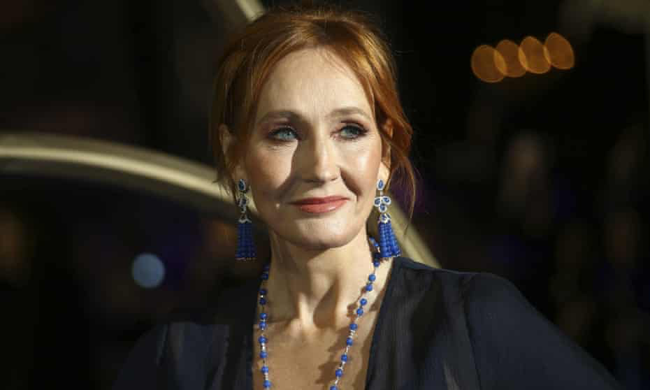
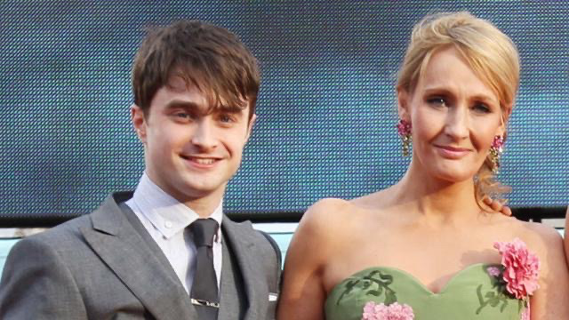
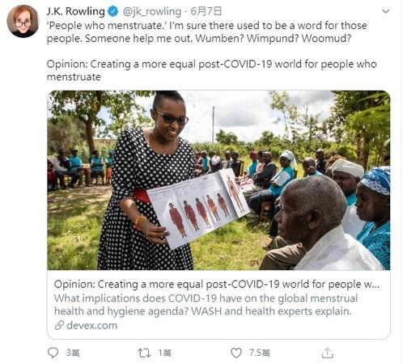
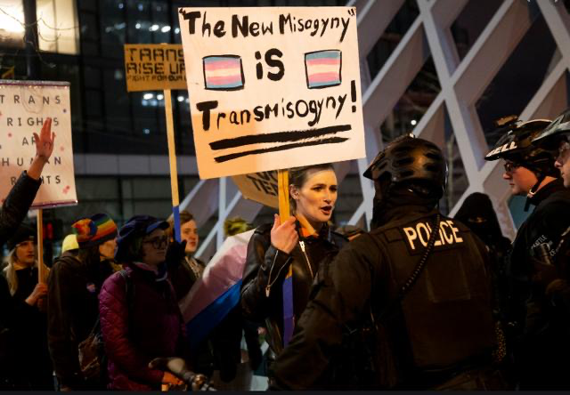

JK罗琳回应跨性别问题

来源：卫报
作者：Sian Cain
翻译/编辑：sumyee桃
排版：hurrah
特别感谢：paper，北风儿，朝酒，小安
插图来源网络，侵权删除
昨日，JK罗琳在一篇长文中首次公开了自己遭受暴力虐待和性侵犯的经历，以回应社会舆论对于她关于跨性别言论的批评。

“我分享这些经历并不是为了博取同情，而是为了声援那些和我有类似经历的女性。她们因对性别认同界限的担忧，而被诋毁为‘偏执者’。”
这次的轩然大波，起因是罗琳上周末发表的公开言论。“如果生理性别(sex)不是真实的话，全球女性的存在就被抹去了。我爱跨性别们，但是抹去生理性别的观念(Concept of Sex)会抹杀许多人有意义地讨论其生活的权利。”
随之，很多名人明星站出来反对她的立场。其中包括哈利·波特的扮演者丹尼尔·雷德克里夫(Daniel Radcliffe)。

罗琳在文章中写道，自己一直在积极的反抗性别歧视和现代厌女情结。她分享了在青春期时“无性别”的自我认同，并表示她曾思考“如果我晚30年出生，可能也会选择跨性别”。
“摆脱女性身份(Womanhood)的诱惑是巨大的。 我十几岁的时候曾遭受严重的焦虑障碍(OCD)。如果我当时能在互联网中获得认可和支持，那么我相信我可以说服自己，变成我父亲一直以来渴望的那个‘儿子’”。

最初，在阅读了苏格兰拟议的“性别确认证明 (Gender Confirmation Certificates)”后她很欣喜。这一议案的通过，将允许跨性别者根据自己的性别认同，而不是医学报告来更改出生证明上的性别。
然而，尽管她相信跨性别者需要并应该受到保护，她不同意未经历过激素治疗或变性手术的跨性别女性进入单性别空间(Single-sex Spaces)。
“既然现在无需进行手术或激素治疗，便可以颁发性别确认证书。那么，任何认为自己是女性的男人便可以随意出入女卫生间和女更衣室。这扇大门为他们敞开，这是一个非常简单的事实。”她写道。
她说，这使她回想起曾遭受的严重的性侵犯。“事情发生在我处于弱势的时间和空间里，那个人利用了这个机会。我无法遏制自己的情绪，政府对于妇女和女孩安全的疏忽大意令我愤怒和失望。”
她还首次表示，自己在20多岁时遭受了暴力虐待。“当我读到一名跨性别女人在一个暴力男人的手中死亡时，我感同身受。”
她认为，那些不支持保留单性别空间(Single-sex Spaces)的人是"那些幸运的、未遭受过男性暴力或性侵犯，并且从未了解过这种事情有多么普遍的人”。
在过去十年里，进行跨性别手术的女孩人数飞速增涨了4,400％。她认为，最主要的原因就是当代社会上严重的性别歧视和厌女情结。
“我已经读过所有关于女性特性(Femaleness)并非基于生理身体，以及关于生理女性(Biological Women)没有共通性的断言。这些观点体现了根深蒂固的厌女情结和社会倒退。"

同样清楚的是，这是一些残酷的性别隔离主义(Segregationist)观念。否认生理性别重要性的目标之一，是阻碍女性成为具有凝聚力的政治阶层……女性成为跨性别者还不够，她们必须接受并承认跨性别女性与自己之间没有实质性区别。”她写道。
罗琳的这篇文章引发了激烈的公共讨论。周三晚上，赫敏扮演者艾玛·沃特森(Emma Watson)发表推文说：“跨性别者就是他们自己认为的那样，应该活出自己的生活。而不该受到不断的质疑或被告知他们不是自己认为的那样。”
在第二条推文中，艾玛说：“我希望我的跨性别粉丝们知道，我和全世界上许多其他人，看着你们、尊重你们、爱着你们，因为你就是你。”